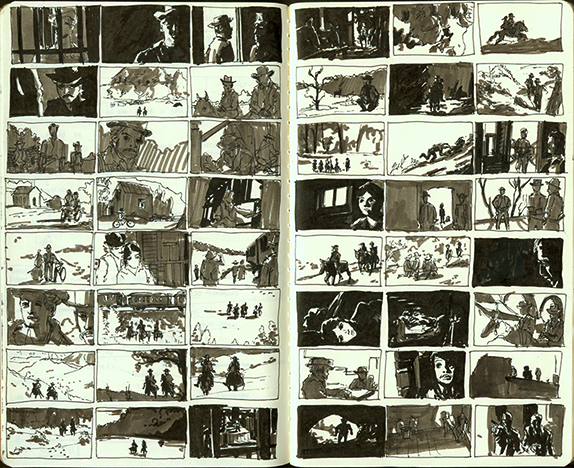
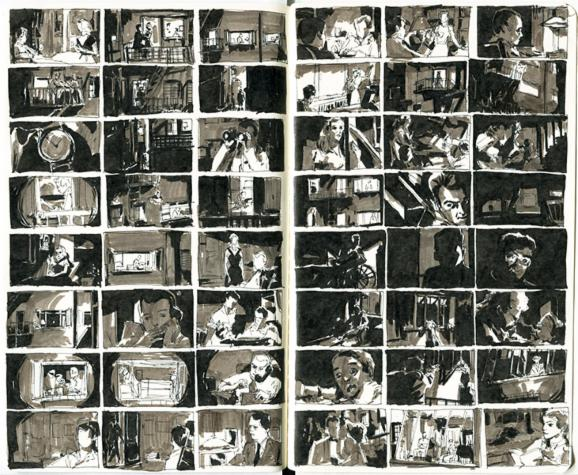
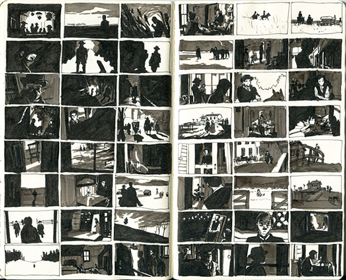
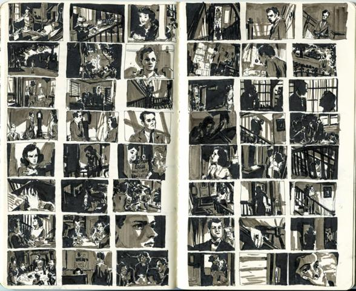
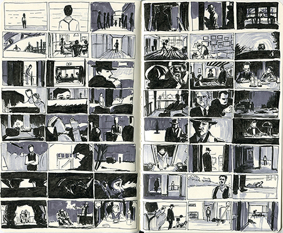

<link rel="import" href="../../bower_components/polymer/polymer.html">

<dom-module id="page-studies">

  <template>

    <style is="custom-style" include="page-styles"></style>

    
    <h4><i>Butch Cassidy and the Sundance Kid</i> (1969) - Cinematography: Conrad L. Hall</h4>
    
    <h4><i>Rear Window</i> (1954) - Cinematography: Robert Burks</h4>
    
    <h4><i>The Assassination of Jesse James by the Coward Robert Ford</i> (2007) - Cinematography: Roger Deakins</h4>
    
    <h4><i>Shadow of a Doubt</i> (1943) - Cinematography: Joseph A. Valentine</h4>
    
    <h4>Road to Perdition (2002) - Cinematography: Conrad L. Hall</h4>

  </template>

  <script>

    Polymer({is: 'page-studies'});

  </script>

</dom-module>
